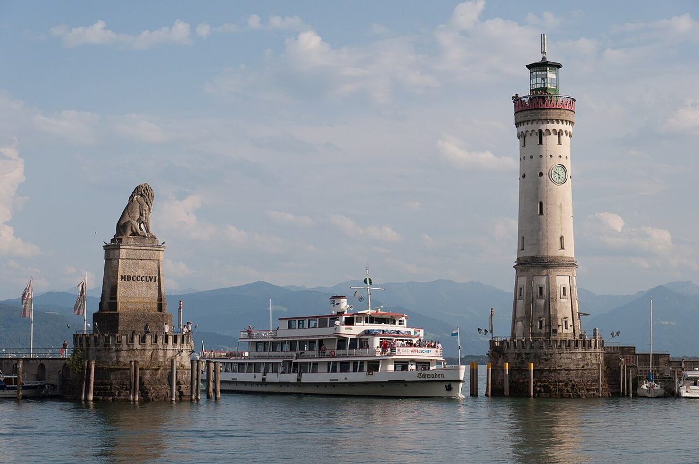

Découvrez le lac de Constance : une pépite entre l'Allemagne, la Suisse et l'Autriche

Le lac de Constance (Bodensee en allemand), entouré par l'Allemagne, la Suisse et l'Autriche, est une destination magique alliant nature, histoire et gastronomie. Voici un guide pour bien organiser votre escapade.
Comment s'y rendre ?
Le lac est accessible :
- En train : gares principales à Constance (Allemagne) et Bregenz (Autriche).
- En voiture : autoroutes bien reliées depuis Munich, Zurich ou Stuttgart.
- En avion : aéroports de Zurich (Suisse) ou Friedrichshafen (Allemagne) à proximité.
Quand partir ?
- Été (juin à août) : idéal pour les baignades et les festivals.
- Printemps/automne : températures douces, paysages fleuris ou colorés.
- Hiver : marchés de Noël féériques (notamment à Constance).
3 incontournables autour du lac
1. L'île de Mainau
Surnommée l'île aux fleurs, ses jardins et serres tropicales éblouissent toute l'année.
2. Constance (Konstanz)
La vieille ville médiévale et son port animé valent le détour. Ne manquez pas le Konzil, ancien concile transformé en musée.
3. Bregenz (Autriche)
Connue pour son festival d'été avec des scènes flottantes sur le lac, et la Pfänderbahn (vue panoramique sur les Alpes).
Bonus : L'abbaye de Saint-Gall (Suisse), classée à l'UNESCO, est à une courte excursion.
À déguster
- Poissons frais : perche ou féra, grillés ou en soupe.
- Spätzle : pâtes locales souvent gratinées au fromage.
- Vins régionaux : le Müller-Thurgau (blanc fruité) ou le Pinot Noir.
Conseils pratiques
- Explorez en vélo : les pistes cyclables autour du lac sont exceptionnelles.
- Utilisez les ferries pour passer d'un pays à l'autre en quelques minutes.
Le lac de Constance séduit par sa tranquillité et sa richesse culturelle. Une escapade à personnaliser selon vos envies !
Haiktec
- Planificateur de Voyage dans la Forêt Noire - Budget & Itinéraire pour Guides Touristiques
- Le Guide Essentiel des Voyageurs Autonomes : Découvrir le Saarland et la Moselle en 7 Étapes Faciles
Text mit KI erstellt und automatisch geprueft.